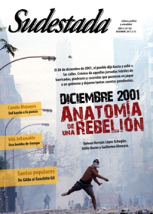

Buscar
Villa Inflamable. Los beneficios del progreso
En Dock Sud, el mapa ecológico es también un mapa de la exclusión. 5 mil personas viven en el barrio Villa Inflamable con el Polo Petroquímico frente a sus rostros y respiran aire tóxico, caminan sobre tierra contaminada y beben agua exquisita en hidrocarburos. La respuesta de las autoridades es una relocalización dentro del mismo territorio, pero con la promesa de instalar nuevas empresas en la zona. Mientras, los vecinos buscan una solución en conjunto para demostrar que también pueden decidir por ellos mismos.
Edición N° 105
Diciembre 2011
Revista bimensual
Comprar edición impresaSumario
- Diciembre 2001: Anatomía de una rebelión
- Capitalismo en serio
- Imágenes paganas
- Villa Inflamable. Los beneficios del progreso
- "La poesía fue mi resistencia"
- "La cultura siempre encuentra huecos por donde sonar"
- De revolucionario trotkista a lógico matemático
- Musiquero de los caminos
- El berretín de escribir
Compartir Articulo
Teodora busca. Ya van varias bolsas que logra llenar con su marido, Gregorio, que la ayuda con la recolección. El paisaje no es precisamente un retrato impresionista, con bellas flores que crecen a la ribera de un arroyo cristalino. Para nada.
Teodora busca y revuelve entre la basura. Algo más va a encontrar. Algún material que le sirva para llevar al corralón y conseguir algo de plata. "Nosotros no tenemos laburo. Laburamos para nosotros mismos, para poder sobrevivir, para tener algo que comer. Todos los días: es la única manera que queda", dice, entre la indignación y la resignación.
Un gran descampado se despliega ante sus ojos, que sirve de vertedero para los camiones que no paran de entrar y arrojar escombros y basura. El humo de la quema de esos residuos por un lado, y la fragancia indescriptible y esotérica del arroyo Sarandí por el otro, hacen de ese sitio un lugar que debiera estar prohibido a todo eso que se llama Humanidad.
Sin embargo, allí vive gente. Como Teodora y Gregorio.
Para cruzar el arroyo, un puente digno de una película de Indiana Jones conecta ambas orillas. Dar un paso en aquel piso hecho de maderas y chapas oxidadas casi arrojadas al azar provoca la inevitable sensación de caída a esas aguas ricas en plomo, cromo, petróleo y mierda. Mucha.
Una vez del otro lado, la calle Sargento Ponce da lugar al enorme Polo Petroquímico y sus gigantescas chimeneas, principales focos de contaminación que aquejan a los habitantes de Villa Inflamable, en el barrio de Dock Sud, Partido de Avellaneda.
"El asesino invisible", lo llaman algunos vecinos. Otros prefieren algo más moderado: "bomba de tiempo".
1. El barrio
Villa Inflamable está a tan solo 3 km.de Casa Rosada, y es de esas realidades que no se ven mucho en la televisión. La creatividad cínica de su nombre se debe a la denominación de las boletas de luz que llegaban al barrio, generadas por la construcción de una dársena para productos inflamables. Por lo menos, reconoce el principal atributo del lugar: su capacidad de combustión.
Antes era Villa Porst o Costa Sarandí, una zona de quintas y lagunas, donde los vecinos pescaban, tenían viñedos y cultivaban. A partir del advenimiento de las empresas, la cosa cambió, y las viejas zonas de lagunas sirvieron de base para los futuros rellenos y construcciones de las personas que venían a buscar un lugar para vivir, acechados por el desempleo, la marginalidad y el neoliberalismo. Para contextualizar: post-dictadura, década del 90, menemismo.
Hoy en día viven alrededor de 5 mil personas en el barrio.
2. Agua
Nolberto Morón tiene 58 años y vivió toda su vida en Dock Sud. Trabaja en la secretaría de Obras Públicas de la Municipalidad de Avellaneda y fue candidato a primer concejal por el Frente de Izquierda en las últimas elecciones, pero no entró. Tiene pelo largo y seguridad en la voz, propia de un tipo que hace mucho que viene luchando y que no se va a rendir así nomás.
No llega a caminar tres pasos y se detiene a dialogar con algún vecino que se le cruza. Le reitera la importancia de la lucha, la concientización y que hay que resistir.
¿Resistir a qué?
"Yo no estoy dispuesto a negociar la salud de mi nieto", afirma tajantemente. A su hija la operaron de un quiste de ovario, y de vez en cuando le salen algunas ronchas en la piel, producto de la contaminación del agua, la tierra y el aire. No es el único caso.
Francisco camina al lado de Nolberto, está casado, tiene cinco hijos y cuenta que desde hace 20 años vive en Villa Inflamable: "A mi nena la operaron de quiste en los ovarios cuando iba a cumplir 14 años. Mi mujer también tuvo y se rehabilitó por tratamiento. A mi nene lo operaron de los testículos, y después sé que mi otra nena tiene arsénico".
(La nota completa en la edición gráfica de Sudestada Nº 105 - diciembre 2011)
Comentarios
Lucas Pedulla
Articulos más vistos


LIBRERÍA SUDESTADA

Colección infantil

Distribuidora de Libros

Suscripción

Sudestada en URUGUAY

Otros articulos de esta edición
"La poesía fue mi resistencia"
Se llama César González, pero para escribir eligió el seudónimo Camilo Blajaquis a partir del nombre del revolucionario cubano Cienfuegos, ...
 Nota de tapa
Nota de tapa
Diciembre 2001: Anatomía de una rebelión
Fue la revuelta de las consignas inconclusas: ni "Argentinazo", ni "que se vayan todos", ni "piquete y cacerola". Sin embargo, ...
 Malditos: Jean van Heijenoort
Malditos: Jean van Heijenoort
De revolucionario trotkista a lógico matemático
Secretario de Trotsky y referente de la IV Internacional, también supo ser un matemático notable que tuvo un trágico final.
 Editorial
Editorial
Capitalismo en serio
Hace unas semanas atrás, en algunos televisores de Santiago del Estero, se reflejó una expresión. Una sentencia ganó espacio en ...
 Santos populares
Santos populares
Imágenes paganas
Qué mejor manera de ingresar al mundo de los santos populares que hacerlo de la mano de los devotos. Por ...
 Entrevista con Josuelo Schuap, cantautor misionero
Entrevista con Josuelo Schuap, cantautor misionero
Musiquero de los caminos
Durante un alto en uno de sus viajes arriba de "El Dino", el colectivo en el que se traslada llevando ...